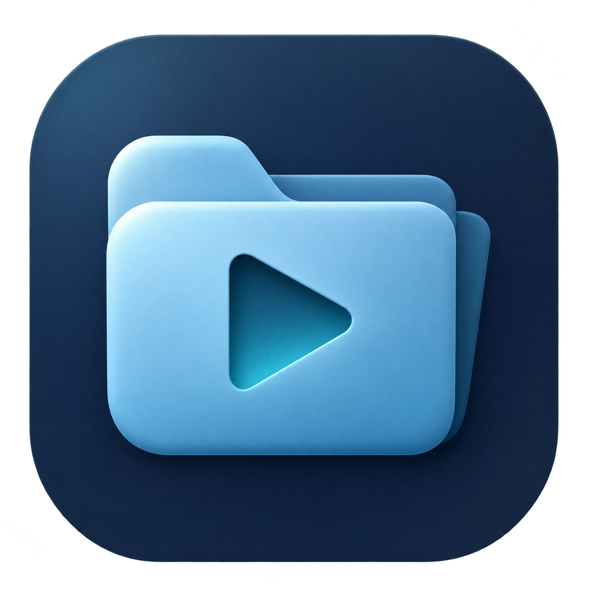
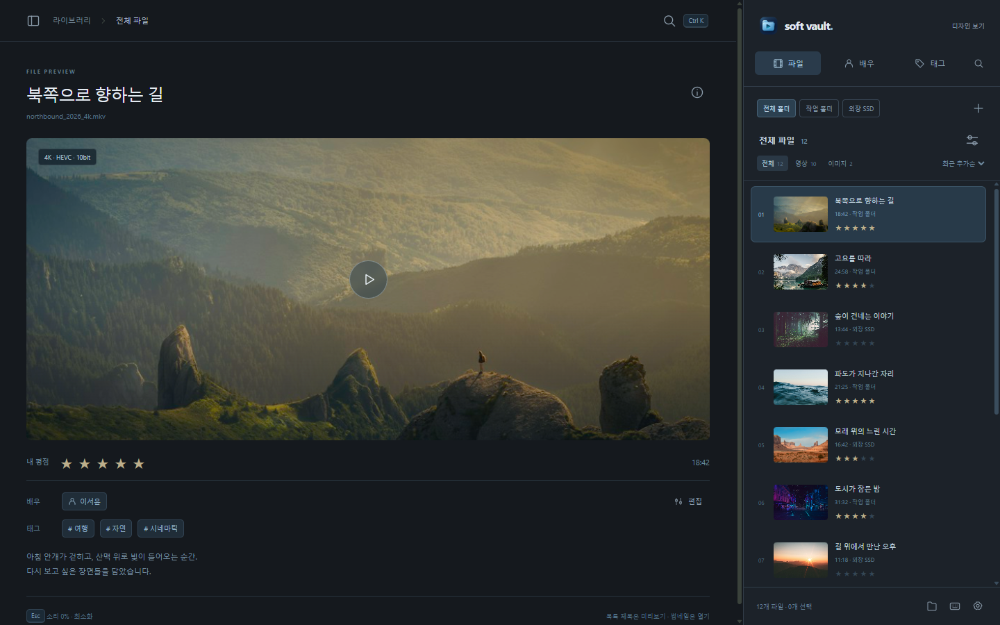

사이드는 하나
분류·폴더·파일을 오른쪽 한 영역에 모읍니다. 재생 중에도 목록을 유지합니다.

soft vault.오른쪽에서 고르고, 넓은 화면에서 보고.
D · Side Deck
03 · Quiet Folder

파일 제목을 누르면 왼쪽에서 미리보고, 썸네일을 누르면 엽니다. 평점·배우·태그·설명은 미리보기 아래에서 확인합니다.
분류·폴더·파일을 오른쪽 한 영역에 모읍니다. 재생 중에도 목록을 유지합니다.
매 영상은 볼륨 0%로 시작합니다. Esc는 소리 0% 적용 후 최소화합니다.
검색과 상세 편집은 호출해서 엽니다. 고정 3분할과 상시 검색바·아카이브는 두지 않습니다.
차콜 · 슬레이트 · 아이스 블루